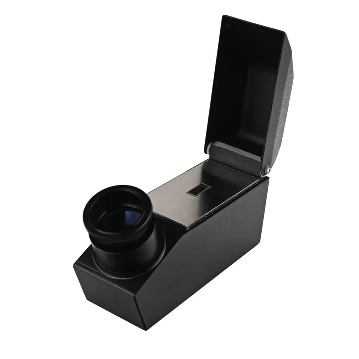

折射儀：寶石身份證的掃描器
折射儀一掃，寶石「報出身」——折射率是每種寶石獨一無二的物理身份證。

核心定義
折射儀（refractometer）測量寶石的折射率（RI，光在寶石中的速度比）——每種寶石有固定的折射率範圍：鑽石 2.42、紅寶/藍寶 1.76–1.77、祖母綠 1.57–1.58、石英 1.54——「報出折射率，寶石就現身」。
折射儀還能量「雙折射」：雙折射寶石（紅寶、碧璽）有兩個折射率（讀數兩條線），單折射寶石（鑽石、尖晶石、石榴石）只有一條——單雙折射的判斷，是鑑定的關鍵一環。
特徵與分類
| 寶石 | 折射率 | 光性 |
|---|---|---|
| 鑽石 | 2.42 | 單折射 |
| 紅寶/藍寶 | 1.76–1.77 | 雙折射 |
| 祖母綠 | 1.57–1.58 | 雙折射 |
| 尖晶石 | 1.71–1.73 | 單折射 |
| 石英 | 1.54 | 單折射 |
操作：寶石用折射液（高折射率液體）接觸稜鏡，透過目鏡讀「暗影線」的位置——折射率越高，線越靠上。雙折射寶石的兩條線，讓鑑定師一眼分辨「紅寶（1.76）vs 尖晶石（1.71）」。
科學原理
折射的物理：光從空氣進入寶石時彎折——折射率＝光速在空氣/寶石中的比值。每種礦物的折射率由「化學成分與晶體結構」決定——它是礦物的「物理指紋」。晶體結構非等向（雙折射）者，不同方向折射率不同。
雙折射的測量：旋轉寶石，目鏡中的暗影線會移動（雙折射）或靜止（單折射）——雙折射率（兩個折射率之差）也是鑑定參數：碧璽 0.018、橄欖石 0.036——「重影」越強，雙折射越大。
鑑定與鑑別方法
- 測折射率：讀暗影線位置
- 測雙折射：旋轉看線移動
- 查表比對：折射率→寶石種類
- 排除：合成與仿品折射率不同
- 配合比重：雙重確認
市場行情與保養建議
市場價值：折射儀（約數千人民幣）是鑑定工作室的「核心儀器」——它讓「紅寶 vs 尖晶石」「祖母綠 vs 沙弗萊」一秒現形。消費者不必買儀器，但要看證書——證書上的折射率，就是儀器的記錄。
建議：鑑定師必備折射儀＋比重儀＋loupe「三件套」——覆蓋九成寶石的初步鑑定。折射率是「身份的數字」，記住常用值，鑑定就入門。
常見誤區
折射率是必要條件，不是充分條件——不同寶石可能折射率相近（如尖晶石與石榴石）。要配合比重、硬度、光譜綜合判斷。
高折射率寶石（鑽石 2.42 超過折射液上限 1.81）測不了——鑽石靠熱導儀與顯微鏡。折射儀有「測量上限」。
冷知識
折射儀用折射率 1.81 的液體讓光進入寶石——這液體有毒（含硫），操作要小心。
超過儀器上限——所以鑽石鑑定用熱導儀。折射儀的「測不到」，反而成了鑽石的特徵。
反直覺觀點
高折射率（鑽石 2.42、紅寶 1.77）代表「光澤越強」——折射率與寶石的「火彩光澤」正相關。數字的階梯，是價格的階梯。
折射率超 1.81 的寶石（鑽石、CZ）——「讀不到數」本身就是身分線索。鑑定是解謎，連「沒答案」都是答案。